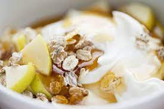

Gesundes Müsli

Beschreibung
Ein leckeres Frühstück das auch noch gut für die Figur ist!
Zutaten:
- Hafermilch
- Haferflocken
- einen Apfel
- Mandelmus
- Kokosraspel
- Zimt
Durchführung:
- Haferflocken in eine Schüssel füllen
- Den Apfel in kleine Stücke schneiden
- Mandelmus, Kokosraspel und Zimt darüber geben
- Die Hafermilch darüber giessen, bis alles bedeckt ist